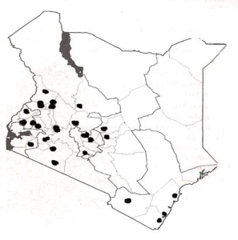

Calliandra
Calliandra
{kind=link}
Scientific name:
Calliandra calothyrsus
Order / Family:
Fabaceae
Introduction
General Distribution:
C. calothyrsus is native to Colombia, Guatemala, Honduras, Mexico, Nicaragua and Panama but now it has spread to many parts of the world. In Kenya.
|  |
| Distribution of Calliandra calothyrsus in Kenya |
| (c) Maundu P. and Bo Tengnas. (2005). Useful trees and shrubs for Kenya, World Agroforestry Centre. |
General Information about the Tree:
It was brought to Kenya in 1980. Although the species coppices well; stand vigour declines with time. Beetles attack flowers, reducing seed production. High tannin content reduces palatability as a fodder.
Biophysical Limits:
It has done well on a variety of soils, including slightly acidic ones. Its optimum altitude ranges from 1,500 - 2,000 m. above sea level. It does not tolerate waterlogging or alkaline conditions. Does well in agro-ecological zones I - IV.
Description:
A large multi-stemmed shrub, 4 - 6 m. Leaves are similar to those of Acacia species, shed in a long dry season.
Propagation and Tree Management
The species is found in agro forestry systems. Seedlings are used in propagation. Direct sowing could work well if sufficient quantities of seed were available, but seed is normally in short supply. Is very fast growing on good sites; lopping, coppices well.
Products:
In addition to fodder, calliandra can be used for other uses such as;
- Apiculture: Flowers contain nectar and because flowering lasts throughout the year bee keeping is profitable. The honey produced by C. calothyrsus has a pleasant bitter sweet flavour. A production of one t of honey/ha has been reported.
- Fuel: A good firewood species because it is fast growing, multi-stemmed, easy to regenerate and thornless.
- Fibre: The pulp and papermaking properties of C. calothyrsus are satisfactory and are comparable to dipterocarps and appropriate for kraft paper manufacture. C. calothyrsus pulp is easily bleached, but wood dimensions are generally small, making handling and chipping difficult. The wood is also suitable for pulp and papermaking and is used in Asia.
- Other products: As an additive to leaf meal, it has shown promise both as a protein source and as a source of carotene to maintain yolk colour in commercially produced eggs. It is also a suitable host for shellac-producing insects.
Services:
- Erosion control: C. calothyrsus can be used to rehabilitate erosion-prone areas and recover land exhausted by agriculture, where it easily dominates undesired weeds such as Eupatrium spp., Saccharum spp., and Imperata cylindrica.
- Shade or shelter: C. calothyrsus is often planted as a shade tree around houses. The dense foliage provides protective cover against sun and rain. In forestry it is used as a nurse tree for partially shade-tolerant timber trees such as Agathis species.
- Nitrogen fixing: Roots are able to fix atmospheric nitrogen because of the symbiosis with Rhizobium bacteria (to which root nodules bear witness) and the symbiosis with root fungus.
- Soil improver: High leaf biomass production and high yields of protein leaf material on less fertile soils make it very suitable as a green manure and it is used in alley-cropping systems. Due to litter and the combination of a deep and well-developed lateral rooting system, the soil and productivity of the land is improved. However, the relatively high level of tannins present in its leaves slows the rate of microbial breakdown of the organic matter.
- Ornamental: Its beautiful red "powder puff" flowers make it an attractive ornamental.
- Boundary or barrier or support: Suitable for hedgerow boundaries.
- Intercropping: C. calothyrsus is compatible with crops, with both deep roots and extensive fibrous roots. It has shown promise as an understorey plant in coconut plantations with about 60% light transmission
Seed:
Collection has to be timely - just when the pods mature but before they split open. Once they split the seed disperses. About 19,000 seeds per kg. Germination is good and completed after about 25 days.
Treatment:
Immerse seed in hot water, allow to cool and soak for 24 hours.
Storage:
Seed can be stored for long periods (1-2 years).
Pests and Diseases
Wood is often attacked by ants. It is attacked by the teak sapling borer (Sahyadrassus malabaricus) in some parts. Forage tree legumes planted in close proximity to teak plantations, for example, may be subjected to higher rates of colonization by this pest than trees further from teak plantations.
In Kenya a coleopteran, Pachnoda ephippiata, feeds on the fruits, flowers and foliage, causing floral abortion and failure of seed production. The degree of infestation seems to be aggravated by prolonged dry spells when insect populations on the plants are high. In India, the polyphagous leaf feeder Myllocerus viridanus is responsible for considerable defoliation. Beetles also attack C. calothyrsus flowers and hence reduce the seed production. It is often attacked by ants.
Information Source Links
- Bekele-Tesemma, B. (2007). Useful trees and shrubs for Ethiopia. World Agroforestry Centre, Nairobi, Kenya. ISBN 92-9059-2125
www.worldagroforestrycentre.org - Maundu P. and Bo Tengnas. (2005). Useful trees and shrubs for Kenya, World Agroforestry Centre. ISBN-9966-896-70-8. www.worldagroforestrycentre.org
Last updated.
02/22/2018 - 18:28
| Unless otherwise stated, all content on the Infonet Biovision Website is licensed under a Creative Commons License | Disclaimer |